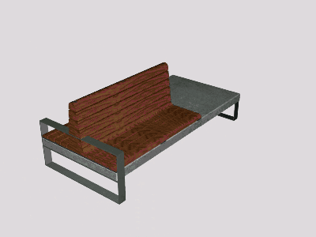

Asiento de zona de espera pública
Solución aportada a la petición de crear un asiento destinado a zonas públicas de tránsito de personas.
Categorías:
- Proyecto
- En grupo
- Prácticas
Documento entregado:
Asignatura: Diseño Asistido por Ordenador.
Curso: 2013-2014.
Integrantes del grupo: M.O.C., R.E.G, M.C.J. y A.S.D. (yo).
Nota final: 7.
Comentario:Este proyecto se llevó a cabo en un solo fin de semana. A pesar de haber sido mandado con meses de antelación, los miembros del grupo no nos conocíamos hasta 4 días antes de entregar, por lo que estoy muy contento con la nota final del trabajo y el proyecto que surgió en tan pocas horas de trabajo.Cada uno de los miembros expusimos nuestras ideas, y elegimos la que más nos gustó.Nada más elegirla empezamos a sacar medidas, todas ellas teniendo en cuenta la antropometría.A las pocas horas elegimos materiales y los tratamientos que deberían tener, además de la fabricación de las piezas.Como se pedía que fuese modulable, elegimos el eliminar una de las patas laterales para sustituirla por un cubo que fuese la pieza modulable multiusos.El cubo podía tener la función que quisiéramos: contenedor de maceta, valla publicitaria, papelera, etc.; pero además podía servir como soporte para más de un banco.Finalmente, mientras un compañero hacía los planos generales, otro el de los detalles y otro la documentación, yo me encargaba de hacer los renderizados 3D, siendo este mi primer trabajo de este tipo.El trabajo concluyó el domingo de madrugada, justo el día antes de la entrega del trabajo y u exposición.
A tener en cuenta:Este trabajo se diferencia con respecto a los otros que se expusieron por ser el único pensado para exterior, usando entre sus elementos el hormigón y madera tratada para exteriorOtro punto a tener en cuenta es el cubo, ya que era el único que tenía en cuenta elementos que suelen estar cerca en sitios públicos, ya sean papeleras, pancartas publicitarias o incluso plantas.
Presentación del proyecto: